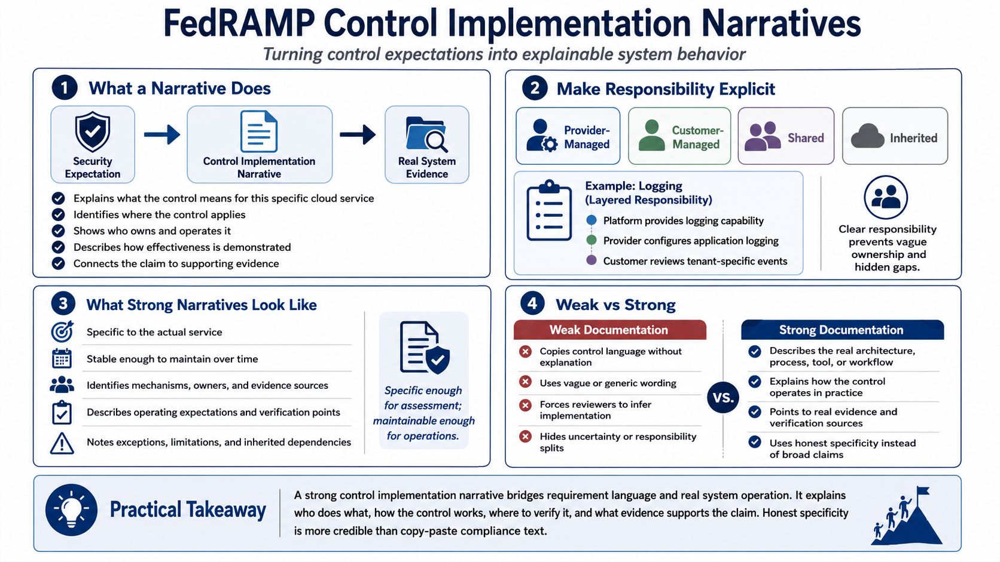

Control Narratives and Implementation Details
Connecting to LMS... Progress: in progress

Narration
A control implementation narrative explains how the cloud service satisfies a security expectation. It should identify what the control means for this specific system, where it applies, who owns it, how it operates, how effectiveness is demonstrated, and what evidence supports it. The narrative is the bridge between control language and the real architecture, process, tool, or workflow.
Responsibility needs to be explicit. A control may be provider-managed, customer-managed, shared, or inherited from another system or platform. Some controls may have multiple layers. For example, a platform may provide logging capability, the provider may configure application logging, and the customer may review tenant-specific events. A good narrative explains the split without hiding uncertainty or pushing responsibility into vague language.
Control narratives should be specific enough for assessment but maintainable over time. Overly generic statements do not help reviewers understand the system. Overly brittle statements can become outdated after routine engineering changes. The best narratives describe stable mechanisms, ownership, evidence sources, and operating expectations while avoiding unnecessary details that will churn constantly. They tell reviewers what matters and where to verify it.
Copy-paste control language is weak documentation because it repeats the requirement without explaining implementation. A reviewer should not have to infer how the control works from a restated sentence. Strong narratives describe the actual service, the actual process, and the actual evidence. They also acknowledge exceptions, limitations, and inherited responsibilities. Honest specificity is more credible than broad claims.